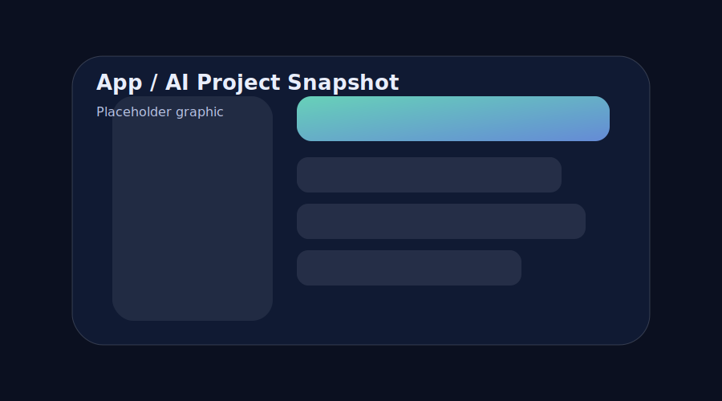

M-Navigate
Dart • Flutter • LLM API • AWS • MongoDB
What it is
M-Navigate is a mobile app concept that helps first-time students plan schedules and navigate to classrooms. It combines a chatbot interface with campus data (courses, rooms, and building layouts) and presents results in a friendly Flutter UI.
Key features
- Conversational Q&A to build schedules and answer “where do I go?” questions
- Speech-to-text input for accessibility and faster interaction
- Maps + context so responses are actionable, not just text
Engineering highlights
- Backend hosted on AWS to handle API requests and compute responses
- MongoDB to store and retrieve user-relevant data efficiently
- Prompt design focused on reliable, grounded answers
Links
Add links if you want to share code or a demo (optional for the assignment).
This project summary is based on my resume bullets.